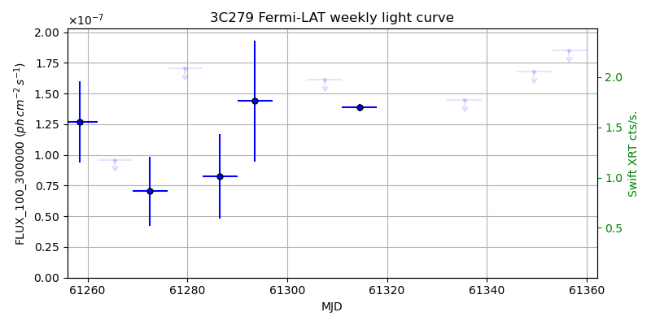
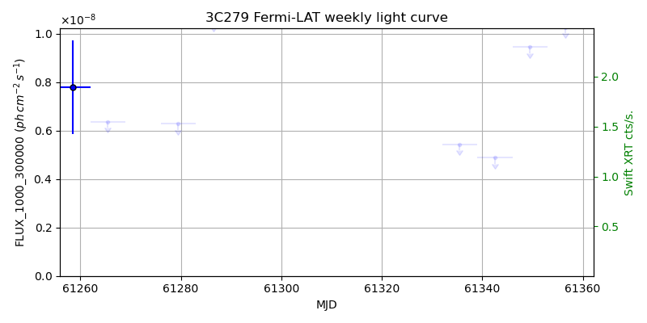

LAT Lightcurve site: https://fermi.gsfc.nasa.gov/ssc/data/access/lat/msl_lc/source/3C_279
Swift site: https://www.swift.psu.edu/monitoring/source.php?source=3C279
NED: Query
Time of last update of this page: UT: 2026-11-20 16:25 (MJD: 61364.685)
| Property | Value |
|---|---|
| R.A. | 12:56:11.28 |
| Dec. | -5:47:20.4 |
| z | 0.536 |
| 3FGL SpectrumType | LogParabola |
| 3FGL PL Index | |
| 3FGL Flux_100_300000 | 4.56e-07 1 / (s cm2) |
| 3FGL Flux_1000_300000 | 2.40e-08 1 / (s cm2) |
| 3FGL Flux >200 GeV | 7.16e-12 1 / (s cm2) |
| 3FGL Extrap. Crab >200 GeV | 0.03 |
| 3FGL Flux After EBL Absorption >200GeV | 1.08e-12 1 / (s cm2) |
| 3FGL EBL Crab Fraction >200GeV | 0.00 |
| MJD | dMJD | Flux | dFlux | Frac3FGL | FracCrab>200GeV | EBLFracCrab>200GeV |
|---|---|---|---|---|---|---|
| 61359.50 | 0.50 | 4.98e-07 | 0.00e+00 | 0.00 | 0.00 | 0.00 |
| 61360.50 | 0.50 | 2.12e-07 | 0.00e+00 | 0.00 | 0.00 | 0.00 |
| 61361.50 | 0.50 | 3.94e-07 | 0.00e+00 | 0.00 | 0.00 | 0.00 |
| 61362.50 | 0.50 | 2.79e-07 | 0.00e+00 | 0.00 | 0.00 | 0.00 |
| 61363.50 | 0.50 | 2.05e-07 | 0.00e+00 | 0.00 | 0.00 | 0.00 |

| MJD | dMJD | Flux | dFlux | Frac3FGL | FracCrab>200GeV | EBLFracCrab>200GeV |
|---|---|---|---|---|---|---|
| 61328.50 | 3.50 | 3.73e-07 | 0.00e+00 | 0.00 | 0.00 | 0.00 |
| 61335.50 | 3.50 | 1.45e-07 | 0.00e+00 | 0.00 | 0.00 | 0.00 |
| 61342.50 | 3.50 | 2.26e-07 | 0.00e+00 | 0.00 | 0.00 | 0.00 |
| 61349.50 | 3.50 | 1.68e-07 | 0.00e+00 | 0.00 | 0.00 | 0.00 |
| 61356.50 | 3.50 | 1.85e-07 | 0.00e+00 | 0.00 | 0.00 | 0.00 |

| MJD | dMJD | Flux | dFlux | Frac3FGL | FracCrab>200GeV | EBLFracCrab>200GeV |
|---|---|---|---|---|---|---|
| 61359.50 | 0.50 | 5.19e-08 | 0.00e+00 | 0.00 | 0.00 | 0.00 |
| 61360.50 | 0.50 | 3.11e-08 | 0.00e+00 | 0.00 | 0.00 | 0.00 |
| 61361.50 | 0.50 | 4.81e-08 | 0.00e+00 | 0.00 | 0.00 | 0.00 |
| 61362.50 | 0.50 | 1.34e-08 | 0.00e+00 | 0.00 | 0.00 | 0.00 |
| 61363.50 | 0.50 | 1.54e-08 | 0.00e+00 | 0.00 | 0.00 | 0.00 |

| MJD | dMJD | Flux | dFlux | Frac3FGL | FracCrab>200GeV | EBLFracCrab>200GeV |
|---|---|---|---|---|---|---|
| 61328.50 | 3.50 | 2.80e-08 | 0.00e+00 | 0.00 | 0.00 | 0.00 |
| 61335.50 | 3.50 | 5.44e-09 | 0.00e+00 | 0.00 | 0.00 | 0.00 |
| 61342.50 | 3.50 | 4.88e-09 | 0.00e+00 | 0.00 | 0.00 | 0.00 |
| 61349.50 | 3.50 | 9.46e-09 | 0.00e+00 | 0.00 | 0.00 | 0.00 |
| 61356.50 | 3.50 | 1.03e-08 | 0.00e+00 | 0.00 | 0.00 | 0.00 |
--------------------------------------------------------- Using user-supplied coords: 12:56:11.28 -5:47:20.4 2000 --------------------------------------------------------- FLWO UT night of: 2026-11-21 Local Sid. @ Midnight: 03:37 Sunset (-15.0) (local, UT): 18:33 01:33 Sunrise (-15.0) (local, UT): 05:47 12:47 Moonrise (local, UT): Moonset (local, UT): 03:40 10:40 Moon phase: 0.85 --------------------------------------------------------- AzTime LSID UT Obj_el Obj_az Mn_el Mn_az Sep. --------------------------------------------------------- 18:33 22:09 01:33 -43.0 294.2 47.9 117.4 174.7 19:03 22:39 02:03 -48.7 301.2 53.3 125.0 174.8 19:33 23:09 02:33 -53.9 309.8 58.2 134.7 174.9 20:03 23:39 03:03 -58.4 320.5 62.3 146.9 175.0 20:33 00:09 03:33 -61.9 333.9 65.1 162.1 175.1 21:03 00:39 04:03 -63.9 349.7 66.3 179.7 175.2 21:33 01:09 04:33 -64.1 6.8 65.4 197.5 175.3 22:03 01:39 05:03 -62.4 23.1 62.9 213.2 175.3 22:33 02:09 05:33 -59.2 37.0 59.0 225.9 175.4 23:03 02:39 06:03 -54.9 48.2 54.2 235.9 175.5 23:33 03:09 06:33 -49.8 57.2 48.9 243.9 175.6 00:03 03:39 07:03 -44.2 64.5 43.2 250.4 175.6 00:33 04:10 07:33 -38.3 70.6 37.3 255.9 175.7 01:03 04:40 08:03 -32.1 75.9 31.2 260.7 175.8 01:33 05:10 08:33 -25.9 80.5 25.1 265.1 175.8 02:03 05:40 09:03 -19.5 84.8 19.0 269.2 175.9 02:33 06:10 09:33 -13.1 88.9 12.9 273.0 175.9 03:03 06:40 10:03 -6.7 92.8 6.8 276.9 176.0 03:33 07:10 10:33 0.2 96.8 1.0 280.7 176.0 04:03 07:40 11:03 6.1 100.8 -4.9 284.7 176.0 04:33 08:10 11:33 12.3 104.9 -11.1 288.8 176.0 05:03 08:40 12:03 18.4 109.4 -16.8 293.2 176.0 05:33 09:10 12:33 24.3 114.3 -22.3 298.1 176.0 05:47 09:25 12:47 27.0 116.8 -24.8 300.5 176.0 --------------------------------------------------------- Source never above horizon of 55.0 deg. Dark hours >55 deg.: 0.00